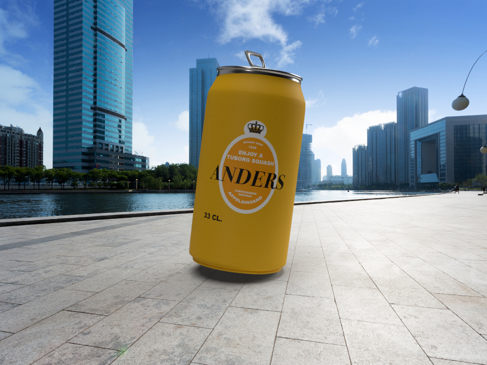

Næringsindhold pr 100 ml
Kcal/Kj 46/197
fedt 0 g
Mættede fedtsyrer 0 g
Kulhydrat 11,3 g
Heraf sukkerarter 11,3 g
Protein 0 g
Salt 0 g
Ingredienser
sukker, appelsinsaft (5,8%), kuldioxid,
syre (citronsyre), konserveringsmiddel (E202),
appelsinolier, gulerodssaft, antioxidant (ascorbinsyre),
stabilisator (johannesbrødkernemel)
Fotograf: Mikkel Jul Hvilshøj
Foto fra: Bureaubiz
TUBORG SQUASH

I kan alle være helt rolige, det er kun udsenet som er ændret, det er stadigvæk, den brømte Sqvajs som vi alle kender og elsker. Del den med en du holder af eller "ENJOY" den selv. Vi syntes i har fortjent det!